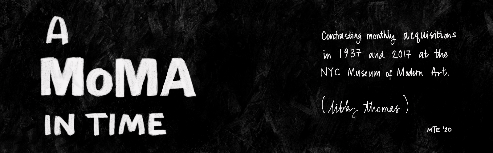

In 1929, The New York Times announced the opening of the city's new Museum of Modern Art, stating:
"Experience has shown that the best way of giving to modern art a fair presentation is to establish a gallery devoted frankly to the works of artists who most truly reflect the taste, feeling and tendencies of the day."
This project uses MoMA collections data to explore the acquisition habits of the museum, comparing its acquisition choices in 1937 to behaviors in 2017, eighty years later.